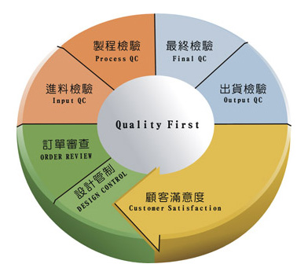

客服專線：(03)280-6015
自動化設備開發
本公司本著實事求是之精神，創造出高品質之機台，在技術、設計能力方面一向秉持著『專業製造』『品質保證』『熱誠服務』的理念，從機台製作至交到客戶手中，客戶開始上線、生產的整套製作系統理念均受到客戶長期好評與支持。
本公司未來仍秉持創造更好品質機台設備的研發精神，研發更符合客戶需求的產品，所以精良品質、卓越設計、親切的服務是我們不變的經營法則。歡迎各位先進有任何測試及自動化上的問題皆可互相研究。

根據經營理念與ISO9001之精神，本公司制定以下的品質政策：
Based on the corporate management beliefs and the spirit of ISO9001, we determine the quality policy as follow:
-
顧客：超越顧客期待
Customer：Exceed customer's expectation -
製程：一次就做好、無缺點
In-Process：Do right the first time, zero defect -
供應商：共存共榮、符合最終消費者需求
Supplier：Prosper together, meet the end customer's requirement